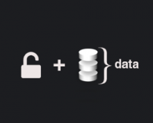

Navegación
índice
siguiente
|
documentación de WOCU - 0.0.1
»
Bienvenido a la Documentacion de WOCU:
¶
Contenidos:
¶

Contenidos:
Productos:
Monitorización:
Correlación:
Detección:
Big Data:
Monitoreo:
Servicios:
Diseño:
Implantación:
Customización:
Compliance:
Health Check:
Soporte:
Formación:
Indices and tables
¶
Índice
Índice de Módulos
Página de Búsqueda
Tabla de Contenidos
Bienvenido a la Documentacion de WOCU:
Contenidos:
Indices and tables
Próximo tema
Productos:
Esta página
Mostrar el código
Búsqueda rápida
Navegación
índice
siguiente
|
documentación de WOCU - 0.0.1
»